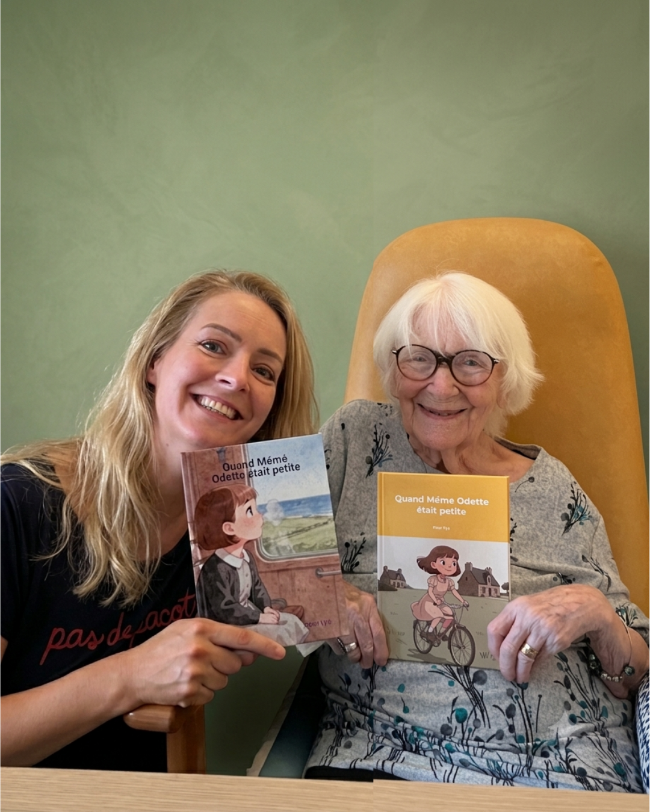

Livre Intergénérationnel
Les histoires des grands-parents disparaissent souvent avec eux. Ce projet cherche à changer ça, en transformant leurs souvenirs oraux en quelque chose de tangible, qu'on peut tenir dans les mains et transmettre.
L'idée
Un grand-parent répond à quelques questions sur son enfance. Ce qu'il raconte devient un livre illustré, adapté à l'âge de ses petits-enfants. Un vrai livre, imprimé, avec les vraies histoires, pas des histoires génériques.
C'est un projet qui mêle IA, narration et automatisation. Mais ce qui m'a donné envie de le construire, c'est une idée simple : certaines choses méritent d'exister sous une forme qu'on peut garder.
Où j'en suis
Le workflow tourne. Je ne détaille pas ici sa mécanique interne (c'est le cœur du projet, encore en phase de construction d'une activité autour), mais je peux enfin dire ce qui compte le plus : les deux premiers livres existent. Vraiment. Imprimés, reliés, avec les vraies histoires de ma grand-mère dedans.
Je les ai commandés, reçus, et tenus dans mes mains à côté d'elle. Ce n'est plus une idée sur un écran, ni un prototype qu'on montre en expliquant "ça donnerait à peu près ça". C'est un objet fini, que quelqu'un peut feuilleter, offrir, garder.

La suite : transformer ce qui fonctionne pour ma famille en quelque chose que d'autres familles peuvent commander. En attendant, je continue de raconter mes expérimentations avec l'IA sur mon Substack Itérations, où E-Koun refait parfois surface au détour d'un article.
Suite à venir.